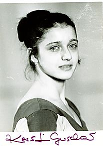

Kerstin Gerschau (GDR)
1973 European AA Bronze Medalist

Medal Total
Olympic Games: 1 Bronze
European Championships:
1 Silver, 1 Bronze
Kerstin was born in Leipzig on January 16, 1958, and trained at SC Leipzig. Her father, Helmut, was a national team coach whose pupils included Silvia Hindorff and Steffi Kraker. After retiring from competitive gymnastics, she studied choreography and theater at the Theater Academy in Leipzig, and received a degree in physical education from the German College of Physical Education. Married to sprinter Klaus Dieter Kurrat (they have 3 children), Kerstin has owned her own dance studio in Teltow since 1990.
Competition Results
1973
European Championships: 3rd AA, 2nd FX, 4th V, 4th B,
5th UB
Jr. Friendship Tournament (Druzhba): 2nd Team, 5th AA, 3rd V, 6th UB, 7th
FX
1976
CSSR-GDR Dual Meet: 1st Team, 3rd AA
GDR Championships: 4th AA, 2nd UB, 2nd FX, 3rd V
GDR-HUN Dual Meet: 1st Team, 3rd AA
NOR-GDR Dual Meet: 1st Team, 4th AA
Olympics Games: 3rd Team, 9th AA
This page was created on September
12, 2004 and was last updated on May 02, 2012.
© Gymn Forum